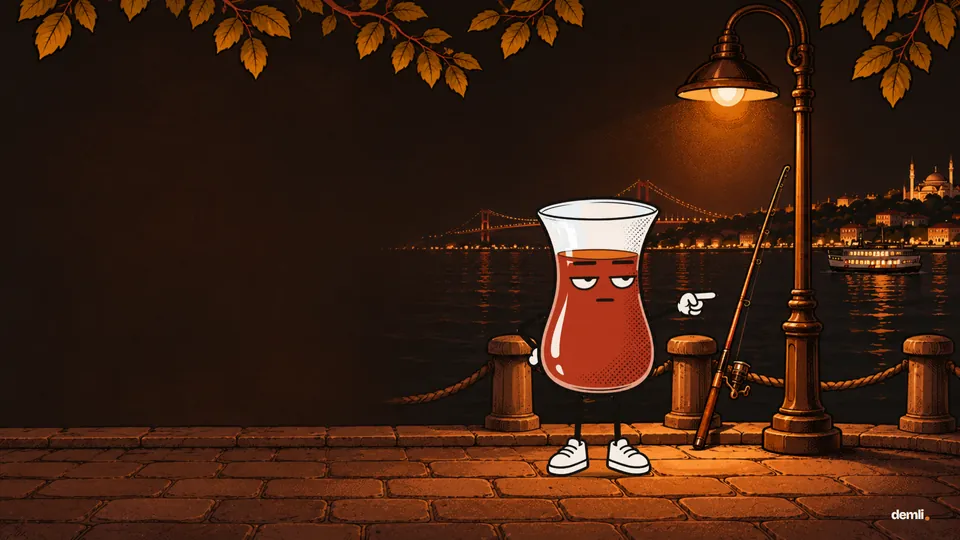
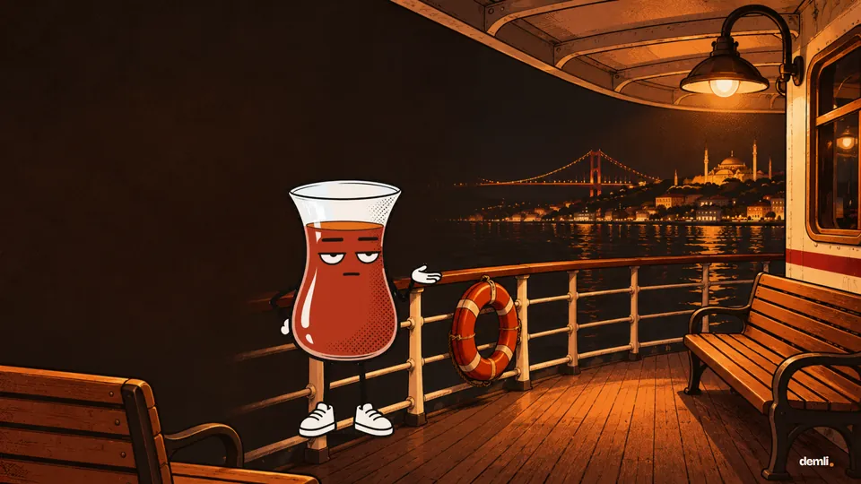

Gece serisi duvar kâğıtları.
İstanbul’da gece, ekranında. Demli her karede kendi ayakları üzerinde duruyor; köşede küçük bir imza var, o kadar.

Boğaz kıyısı
Rıhtımda, lambanın altında. Köprü uzakta, vapur geçiyor.

Vapur güvertesi
Akşam seferi. Can simidi, ahşap güverte, karşıda cami.
Tam çözünürlük dosyalar GitHub Releases’a taşınıyor. Bağlantılar şimdilik Releases sayfasına gider; dosyalar yüklenince doğrudan iner.